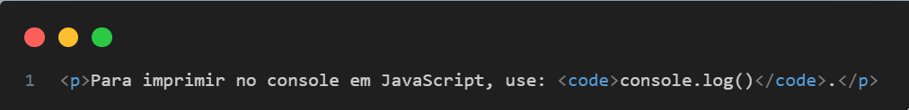
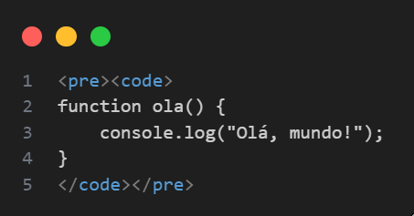

tag <code> Código-fonte — no HTML5
A tag <code> no HTML5 é usada para marcar trechos de código-fonte em um documento. Ela não executa o código, mas serve para dar semântica e possibilitar uma melhor apresentação (especialmente com CSS e/ou highlight de sintaxe via JavaScript).
Semântica
A <code> indica que o conteúdo dentro dela é código de computador. Isso pode incluir:
- Código HTML, CSS, JavaScript, etc.
- Comandos de terminal
- Trechos de linguagens de programação
Sintaxe básica
Características
- É semântica, ou seja, ajuda leitores de tela e motores de busca a entender o conteúdo.
- Geralmente é exibida com uma fonte monoespaçada (como Courier), por padrão.
-
Pode ser usada dentro de outras tags como
<pre>,<kbd>,<samp>para contextos específicos.
Exemplo com <pre>
Quando você quer preservar a formatação (espaços e quebras de linha):

Dica: Use <pre> quando quiser que o código apareça "como está" na tela, com identação e quebras de linha preservadas.
Quando usar
Use a tag <code> quando:
- Estiver mostrando um comando, função ou trecho de código dentro de um parágrafo.
- Estiver apresentando blocos de código junto com
<pre>. - Estiver escrevendo tutoriais, documentação ou artigos técnicos.
O que evitar
-
Não use
<code>apenas para mudar a fonte — use CSS para isso. -
Evite colocar blocos grandes de código somente dentro de
<code>, sem<pre>, pois a formatação pode se perder.
Outras tags relacionadas
| Tag | Uso |
|---|---|
<pre> |
Preserva a formatação original (espaços, quebras de linha) |
<kbd> |
Representa entrada de teclado |
<samp> |
Representa saída de código (como um resultado do terminal) |
<var> |
Representa uma variável |